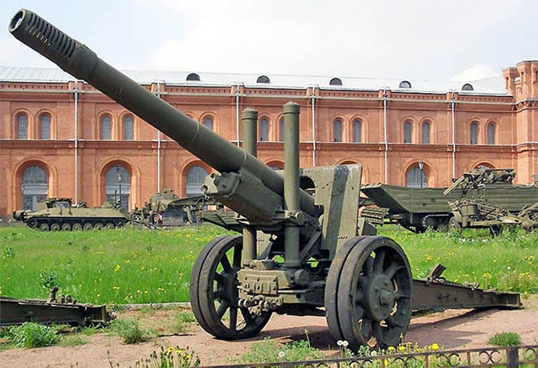

- Оружие победы
- 
- 152 миллиметровая гаубица-пушка образца 1937 года — уникальное орудие, сочетавшее в себе дальность стрельбы пушки и способность гаубицы вести огонь по навесной траектории.
В период Великой Отечественной войны ни одна армия мира, включая немецкую, не имела подобных систем.
Без МЛ-20 не обходилась ни одна крупная артиллерийская подготовка, будь то Московская, Сталинградская или Курская битвы.

- Спектр задач ЗИС-3 был весьма обширен. Пушка предназначалась для уничтожения пехоты противника, его пулеметов и артиллерии, танков и бронемашин, разрушения долговременных огневых точек врага.
По всем этим целям орудие стреляло разнообразным ассортиментом пушечных снарядов – от осколочно-фугасных гранат, пробивавших 75-сантиметровую кирпичную стену, до кумулятивных снарядов, прожигавших броню немецких танков толщиной до 90 миллиметров.
Попав вскоре в действующую армию, орудие ЗИС-3 получило от артиллеристов разнообразные прозвища.
Одни ласково называли пушку за надежность и простоту женским именем "Зося", другие – за скорострельность и отличные боевые характеристики — величали ее "Залп имени Сталина".
- Тяжёлая артиллерия "Катюша"

- 14 июля 1941 года в 15 часов 15 минут батарея капитана Флёрова из семи установок на шасси ЗИС-6 дала первый выстрел (пристрелки, первый залп из 96 ракет — в 15 часов 20 минут).
Во время войны пусковые установки реактивных снарядов ставили на множество шасси, в том числе на мощные грузовики, которые поставляли по ленд-лизу из США.
Поэтому 21 апреля 1942 года приняли решение о разработке нормализованной (т. е. унифицированной) установки, которую можно было бы ставить на шасси любой машины.
Для этого ввели специальный подрамник под нужное шасси, а остальная установка оставалась единой по конструкции. Теперь одну установку можно было использовать на любом шасси, не переделывая ее. Казалось бы, всего одно простое решение, но трудно измерить, насколько оно приблизило победу.

- Собрав все улучшения конструкции, в 1943 году на вооружение приняли М-13Н, позднее названную БМ-13Н.
Наиболее широко известна под народным прозвищем «Катюша»
Военная техника. Катюша (Презентация)
Военная техника. Виллис (Презентация)